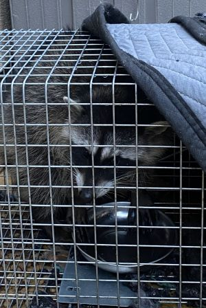
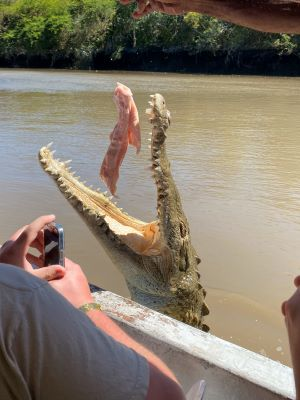
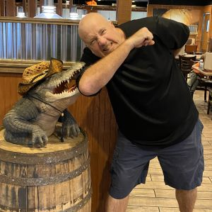
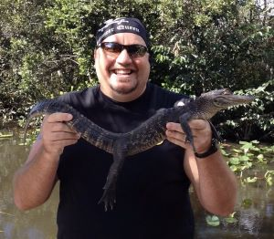

Family Photo
Packer fan base.
Typical Packer Fan

Someone is cheating on the Douglas' dogs.
Does Dad think this is a dog?
There was this huge crocodile that attacked me. It was 14-foot, I mean 20-foot, probably 26-foot long. It leaped right out of the water and tried biting me.
I even have a photo of the moment it gripped down with its huge jaws right on my arm. This is rare footage and I wasn't even scared one bit.
I jumped in the water and wrangled that croc right out of the water. Here is actual physical evidence for all those non-believers.
